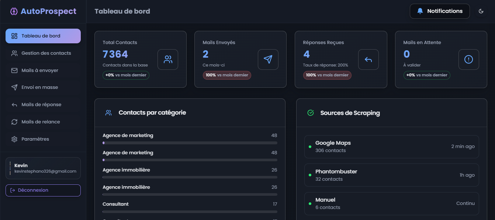

Identifier des entreprises sans site web via le scraping de Google Maps, puis
générer et envoyer des messages de prospection personnalisés à grande échelle.

Fonctionnalités
Gestion des contacts et des segments de prospection
Import de données en CSV
Emails IA personnalisés pour chaque prospect
Envoi de masse avec gestion des envois
Suivi des réponses (ouvertures, réponses positives)